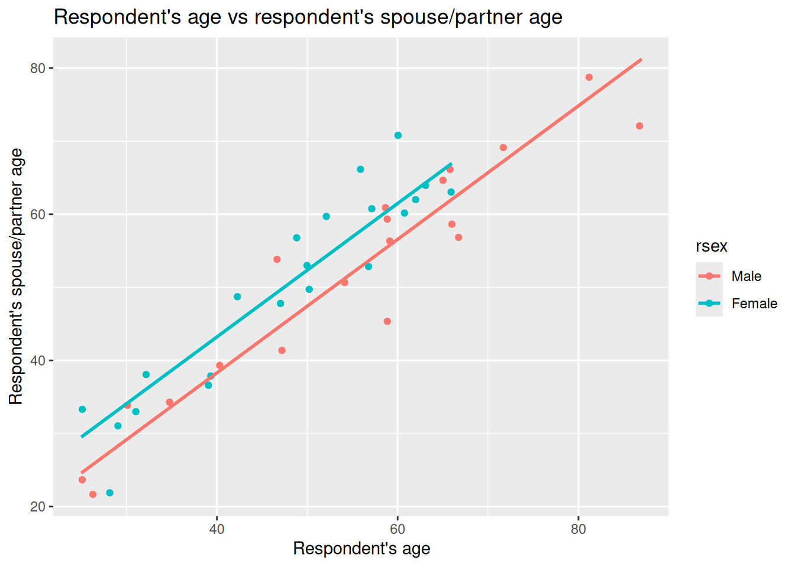
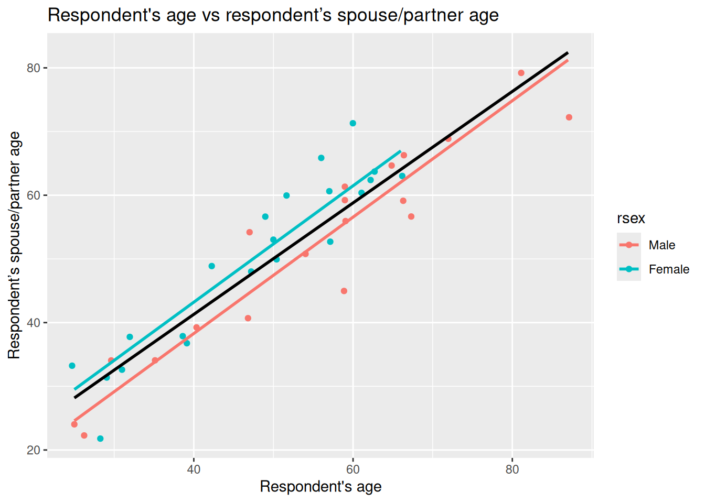

knitr::opts_chunk$set(message = FALSE, warning = FALSE)Moving from Simple to Multiple Regression
Introduction
This week we move from simple linear regression (one independent variable) to multiple linear regression (two or more independent variables). In simple terms, multiple regression lets us compare like with like, we can interpret the coefficient for one independent variable while controlling for the other independent variables we include in our model.
It is rare for quantitative social research to rely only on simple linear models. Social phenomena are complex, without one single clear variable associated with them. Instead, we need analysis approaches that recognise and - key word for this week - ‘control’ for other variables.
Because it is so central, we will split the topic over two labs. This week we will focus on why how multiple linear regression differs from simple linear regression and interpreting coefficients. Next week we look at how number of observations can change as you add variables and interpreting model fit statistics.
NoteOverview
By the end of this week’s lab, you will know how to:
- Interpret a multiple regression coefficient as the expected change in the dependent variable for a one-unit increase in an independent variable, controlling for the other independent variables in the model.
- Identify reference categories for categorical independent variables and interpret their coefficients in relation to that reference category.
- Understand the relevance of other key stats in the regression results - standard error, t value, and p-value - in interpreting the results.
TipDon’t Panic
As said last week, don’t worry where things don’t immediately make full sense. With quantitative analysis, there are ‘spikes’ in difficulty. Moving to linear regression is one of those spikes, and you are definitely not alone in any difficulty experienced getting to grips with it. Each of the ‘spikes’ though will follow a similar pattern. Just as getting to grips with the basics of R code may have initially felt difficult - or even impossible - it is, hopefully, now easier to understand. As you bit by bit get to grips with the basics of linear regression you won’t experience that same level of difficulty again each time you need to interpret a linear regression model.
“Don’t Panic. It’s the first helpful or intelligible thing anybody’s said to me all day.”
Arthur Dent (in Douglas Adams’ phenomenal The Hitchhiker’s Guide to the Galaxy - absolutely essential reading, but not for this course.)
As wee final reminder: Please do let me (Alasdair) know though where anything in the content for this lab is unclear or confusing. I am keen that the lab workbook helps reduce some of the initial difficulty, and I will make further updates to the content this year based on any initial feedback and questions.
Setup
R Markdown
We will continue using the NILT project on Posit Cloud.
As usual, we will need to setup an R Markdown file for today’s lab. Remember if you are unsure about any of the steps below you can take a look back at Lab 6 which has more detailed explanation of each of the steps.
To set up a new R Markdown file for this lab, please use the following steps:
- Please go to your ‘Lab Group ##’ in Posit Cloud (log in if necessary);
- Open your own copy of the ‘NILT’ project from the ‘Lab Group ##’;
- Within the Files tab (bottom-right pane) click ‘New File’, then ‘R Markdown’ from the drop-down list of options;
- Within the ‘Create a New File in Current Directory’ dialogue, name it ‘Lab-9-10-Multiple-Linear-Regression.Rmd’ and click OK.
- Feel free to make any adjustments to the YAML header.
- Create a new code chunk, with
```{r setup, include=FALSE}and in the chunk:
- Create another code chunk, named
preambleand again withinclude=FALSE. Then add the following in the chunk:
Please note, we are loading the haven and moderndive packages this week. (moderndive provides a handy wee function we can use with ggplot for illustrating our example this week.)
- As this is the first time using moderndive, remember to also run in the Console:
install.packages("moderndive")- After installing
moderndive, run thepreamblecode chunk and if no errors, then everything is setup for this session.
Dataframe Setup
We will revisit the example from last week of the relationship between a respondent’s age and their spouse or partner’s age. To ensure out document can knit, we will need to coerce the variables for the age of the respondent’s spouse/partner:
# Age of Respondent's Spouse / Partner
nilt$spage <- as.numeric(nilt$spage)(Note: If you completed the ‘Bonus Activity’ last week you won’t need to coerce spage again.)
Multiple Linear Regresion
Multiple linear regression is based on the same principles as simple linear regression. As with simple linear regression, it is appropriate to use only with a numeric (interval/ratio) dependent variable, such as age or income. Our independent variables though can be categorical and numeric. With multiple linear regression, our independent variables do not have to be all be of the same type either, and can be a mix of categorical and numeric variables.
Scatter Plots
OK, so we have a rough ‘why’ for multiple regression - social phenomena are complex and cannot be explained by one variable alone. We can use our good friend ggplot to help illustrate an example of how considering more variables aids explanations - and what can get missed if we only considered one independent variable.
Once again, to help make it easier to visualise key concepts, let’s create a minimal random sample for the following example using the code below:
As covered last week, we set a ‘seed’ as this is used by the random number generator. This ensures that whilst it randomly selects 40 observations from the NILT data, the random selection will be the same each time the code is run.
We are also only doing this as having a smaller sample makes it easier to visualise key concepts. You would not reduce your sample like this in your analysis. Also, whilst this is referred to as a ‘random sample’, this is different to what we mean by ‘random sample’ in relation to data collection. (One of those annoying situations where ‘same term, different meaning’.)
With ggplot we can now again draw a scatter plot with respondent’s age, rage, on the X axis and their partner/spouse’s age, spage, on the Y axis. However, this time, let’s add gender, rsex as a third variable, passing it in for the color keyword argument in the aes() function. This will then colour the data points in our scatter plot by the respondent’s gender.
Why add rsex here? In practice, you would want to ensure your decisions are grounded with relevant existing literature for your research question. Assuming here that we are basing it on the literature, we may start with our question on relation between respondent age and their partner/spouse age. That gave us our chosen independent and dependent variables. We need though to consider what else might influence partner/spouse age that we should control for. As age gaps often differ based on gender, then rsex would be a variable to consider controlling for. Controlling for rsex lets us compare respondent age and partner/spouse age with like for like.
nilt_sample |> ggplot(aes(x = rage, y = spage, color = rsex)) +
geom_point(position = "jitter") +
labs(
title = "Respondent's age vs respondent’s spouse/partner age",
x = "Respondent's age", y = "Respondent’s spouse/partner age"
)
Right, what can we observe in this plot?
First, we can see that the observations for male and female respondents go in the same direction. When the respondent’s age increases, the age of their partner/spouse increases as well. Female respondents also tend to be located higher on the Y axis (their partner/spouse’s age) compared to male respondents. So it does look like not only the respondents’ age that is involved in age differences with their partners/spouses, but also the respondents’ gender could help explain those differences.
We can again draw lines on our graph to help illustrate that. Last week we drew our initial guesstimate line, then compared it to a line for a fitted linear model. The geom_parallel_slopes() function from moderndive can be used to draw lines for a ‘parellel slopes model’. This draws the fitted lines from a multiple regression with one numeric and one categorical independent variable. “Parallel” just means the categories share the same slope for the numeric variable, but the lines have different intercepts (vertical shift) based on differences between the categories.
Looking at the documentation for geom_parallel_slopes() - the auto-generated link for it doesn’t work so use this link instead - we can see that it will use the variable we passed into the color keyword argument as the categorical variable to use. So, we can simply add it as another component to our ggplot from above, only needing to add, as did in our illustrations last week, se = FALSE. The se argument is whether to display confidence intervals and is TRUE by default. We set it to FALSE as for the illustrations we are wanting to focus on just the lines.
nilt_sample |> ggplot(aes(x = rage, y = spage, color = rsex)) +
geom_point(position = "jitter") +
geom_parallel_slopes(se = FALSE) +
labs(
title = "Respondent's age vs respondent’s spouse/partner age",
x = "Respondent's age", y = "Respondent’s spouse/partner age"
)
Now we have two lines in our graph, one for male respondents, the other for female respondents.
Well, our suspicion that the points representing female respondents were generally above the points for our male respondents is gathering support. What we have in the plot above is a fitted multiple regression model with parallel lines that show difference based on gender - which we’ll cover in more detail below.
Based on our quick visualisations, our initial working interpretation so far is:
- The partner/spouses’ age are positively associated with our male and female respondents’ ages.
- This association is different for males and females. In general, female respondents tend to have partners/spouses older than themselves than male respondents.
Fitting multiple linear regression in R
OK, we can see from our illustrated example that there is a difference, but how would we more rigorously analyse these relationships? For instance, how can we calcualte the magnitude of these relationships?
To do that, we can extend on the code we used for simple linear regression last week.
As a reminder, last week we fitted and run a model with:
m1_simple <- lm(spage ~ rage, data = nilt_sample)
m1_simple
Call:
lm(formula = spage ~ rage, data = nilt_sample)
Coefficients:
(Intercept) rage
6.299 0.875 To extend it we literally just add another variable into the function. The general format when fitting multiple linear regression models is -
Example Code - do not run
lm(dependent_variable ~ independent_variable1 + independent_variable2 + ..., data)Interpreting Coefficients
With our example this week then, all we need to do is + rsex and run the model, as so -
m1 <- lm(spage ~ rage + rsex, data = nilt_sample)
m1
Call:
lm(formula = spage ~ rage + rsex, data = nilt_sample)
Coefficients:
(Intercept) rage rsexFemale
1.7383 0.9138 4.9190 Within the results, we can see that there are three coefficients - the first is the intercept, and the other two are our slope coefficients for rage and rsexFemale.
Within the formal model specification - which we will return to - these would would be represented as:
- intercept, \(\beta_0\)
- slope coefficient one, \(\beta_1\)
- slope coefficient two, \(\beta_2\)
You may have noticed something though which may seem odd. We have rsexFemale rather than rsex. Two questions often spring up when people first encounter this - Why the change to our variable? Why do we have rsexFemale but no rsexMale?
The reason for this is within multiple linear regression the way categorical variables are handled is to select one category as the ‘reference’ and the other categories are then in relation to that reference category. By default, if a category is not specified, R will treat the first category as the reference category. As our nilt_sample has only female and male respondents, we then have rsexFemale with the coefficient of our female respondents in relation to our male reference category.
If we had a variable example with categories A, B, and C and included it in our model, by default our reference category would be A and within the results we would see coefficients for exampleB and exampleC. Behind the scenes, R effectively turns our categorical variables into a series of TRUE/FALSE categorical variables exampleA, exampleB, and exampleC. The values for respondents in each is TRUE/FALSE of whether they are in that category. This then makes it possible to calculate the coefficient for B and C against the A reference.
Back then to our interpretation. Now that we are being more rigorous in fitting a regression model, we can be more precise with our interpretation. We can say there is a positive relationship between respondents’ age and their partner/spouses’ age by a factor of 0.9138 when holding gender constant. In other words, for each one year increase in respondents’ age we see a 0.9138 year increase in partner/spouses’ age. Our rsexFemale coefficient tells us that we can expect the age of female respondents’ partners/spouses to be 4.9190 years older compared to the age of male respondents’ partners/spouses.
Note how for our numeric variable, rage, it follows similar to how we interpret the coefficient in our simple linear regression model, where the coefficient is expressed in terms of a one unit increase in the independent variable. However, with our rsexFemale categorical variable, it is not for each one unit increase in the independent variable but how this category is different compared to the reference category, rsexMale. This is why R for a categorical variable R has to transform it into a series of TRUE/FALSE categorical variables for each category in the variable.
What about the intercept? The intercept is 1.7383. Formally, this is the expected spouse/partner age when the respondent’s age is 0 and the respondent is in the reference category of rsex (here, Male). Because age 0 is outside the range we care about, and wouldn’t make sense to speak in terms of a new-born having a partner/spouse, we don’t try to give this a real‑world interpretation in this case. It is used though when speaking in terms such as - for a 23 year old male respondent we expect their partner/spouse to be approximately 22.76 years old:
- If we take 23 and times it by 0.9138 (our
ragecoefficient) we get 21.0174, then after adding 1.7383 (our intercept) we have 22.7557.
For a 23 year old female would we would add 4.9190 (our rsexFemale) for calculating what we would expect their partner/spouse to be approximately 27.6747.
Importantly, if we return to our graph -

We can now understand better what it shows. The lines are increasing by the coefficient for rage of 0.9138 for each 1 year increase in respondent age, but with varying intercepts so the lines are separate by the 4.9190 coefficent for rsexFemale compared to the rsexMale reference category.
Now compare this to last week’s simple model, also included in above section as m1_simple, which does not control for gender. In that model the slope for rage was lower - 0.875 - and the intercept higher - 6.299. In our multiple regression that now includes rsex the slope becomes 0.9138.
This is consistent pattern we would see with potential missing variable bias. If a relevant variable is left, the estimated slope is pulled away from the “within‑group” relationship. Here, ignoring it mixes the differences between female and male respondents together and gives a compromise line in our simple linear regression for rage with a higher intercept and shallower slope. Using a multiple linear regression that including gender lets us compare like with like and recovers the within‑gender slope - or, in other words, our slope for rage controlling for gender.
We can also add a line to our ggplot to include the simple linear regression line similar to last week. Our parellel slopes though will now let us see how the coefficient for rage in the simple linear regression model was impacted by missing variable bias:
nilt_sample |> ggplot(aes(x = rage, y = spage, color = rsex)) +
geom_point(position = "jitter") +
geom_smooth(method = "lm", se = FALSE, colour = "black") +
geom_parallel_slopes(se = FALSE) +
labs(
title = "Respondent's age vs respondent's spouse/partner age",
x = "Respondent's age", y = "Respondent's spouse/partner age"
)
Given the age of respondents and partners/spouses, the lines aren’t drawn all the way to X = 0. However, knowing that the red line shown is based on the intercept value as shown in our multiple linear regression model results (1.7383) helps us visually compare our simple and multiple linear regression models.
As can roughly see, with more female respondents in bottom-left and only males as approach top-right, the simple linear regression model in aiming to draw best fit through the observations ends up with a higher intercept and smaller slope. Once we control for gender though we can see how the slope coeffecient for rage was being lowered by not controlling for gender.
(Wee aside, as noted above, this parallel slopes model gpplot only works when we have one numeric independent variable and one categorical independent variable. As we add in more variables, we would not be able - at least with any meaingful clarity - visualise the coefficients for multiple linear regression with a scatter plot.)
Multiple linear regression model specification
After the introduction of the simple linear model, the formal definition of the multiple linear model should not look that scary, right? In essence, this equation tells us how \(\hat{y}\) is described/explained by other variables.
\[ \begin{aligned} \hat{y} = \hat{\beta_0} + \hat{\beta_1}*x_1 + \hat{\beta_2}*x_2 + ... + \hat{\epsilon}, && \epsilon ~ N(0, \sigma) \end{aligned} \]
We can break down the equation above in smaller pieces as follows:
- \(\hat{y}\) is the dependent variable, which is explained by
- \(\hat{\beta_0}\) the intercept, plus
- \(\hat{\beta_1}\) the slope coefficient for the first independent variable times the value of \(x_1\) variable 1, plus
- \(\hat{\beta_2}\) the slope coefficient for the second independent variable times the value of \(x_2\), plus
- \(...\) any number of independent variables, plus
- \(\hat{\epsilon}\) the error/residual term.
- \(\epsilon ~ N(0, \sigma)\) this bit tell us that the residuals are normally distributed.
R syntax
As a reminder, the general syntax in R for fitting a multiple linear regression model as follows:
Example Code - do not run
lm(dependent_variable ~ independent_variable1 + independent_variable2 + ..., data)We pass into the lm() function our dependent variable followed by ~ then list two or more independent variables joined by +. Finally, after a comma, the data = ... argument names the data frame where R should look for those variables.
Second MLR model example
OK, let’s briefly introduce a second multiple linear regression model to interpret - this time focusing solely on its results rather than comparing it with a simple linear regression model.
Let’s assume this time we are interested in how gender is associated with the number of hours someone works. Based on the literature we may decide that age and any health conditions are important variables to control for. Younger people are more likely to be students and in part-time work. We would also expect that hours worked would decrease as people approach and reach retirement age. Similarly, we may expect that people with health conditions may work less hours - which may not necessarily be due to their health, but also lack of reasonable adjustments from employers.
To setup our second model then, we need to coerce the anyhcond variable which is binary Yes/No categorical variable for those with a physical or mental health condition or illness lasting or expected to last 12 months or more.
Interpreting our second model results
After coercing anyhcond to a factor, we can fit the model and use summary() to view the regression results -
Call:
lm(formula = rhourswk ~ rsex + rage + anyhcond, data = nilt)
Residuals:
Min 1Q Median 3Q Max
-27.812 -5.346 -0.923 6.972 58.848
Coefficients:
Estimate Std. Error t value Pr(>|t|)
(Intercept) 39.82244 2.60505 15.287 <2e-16 ***
rsexFemale -11.05924 0.92931 -11.901 <2e-16 ***
rage -0.03270 0.03827 -0.854 0.393
anyhcondNo 2.47421 1.90816 1.297 0.195
---
Signif. codes: 0 '***' 0.001 '**' 0.01 '*' 0.05 '.' 0.1 ' ' 1
Residual standard error: 11.02 on 562 degrees of freedom
(638 observations deleted due to missingness)
Multiple R-squared: 0.205, Adjusted R-squared: 0.2007
F-statistic: 48.3 on 3 and 562 DF, p-value: < 2.2e-16For this week let’s focus in on the “Coefficients:” table - we will return to other stats in the results for this model next week.
Right, so the coefficient (Estimate) we have already covered in lab 8 and again at start of this lab. To repeat once more though when we move from simple to multiple linear regression the coefficient describes the association between an independent variable and the dependent variable while holding the other variables constant - by controlling for the other variables.
To then briefly introduce our other key statistics here. The standard error (SE) next to a coefficient is the model’s estimate of how much that coefficient would vary across samples - in other words, the uncertainty around that estimate. Imagine repeating the same survey with the same design numerous times. Each time we’d get a different sample and dataset, so the coefficient would vary from one sample to the next. The standard error is the estimate of that. The t value is then the coefficient divided by its standard error; with values further from zero indicating statistical significance of the independent variable.
The p-value is paired with the t value. As covered last week, there are different codes used for significance, indicated with asterisks next to the p-value. In the social sciences due to the complexity of phenomena and difficulty of controlling factors to the same extent as in other fields, 0.05 is a common significance level to use. We use it in interpreting whether a variable is significant rather than how significant it is; in other words, we do not say a variable with two asterisks is ‘more significant’ than a variable with one asterisk. Both would be significant based on our chosen significance of 0.05.
OK, let’s turn to a quick initial interpretation row by row. I’ll repeat the stats in full for each row to save you scrolling up/down and be a bit more verbose than necessarily would in practice. This is just to re-emphasise key info and help with getting to grips with how we can interpret these stats:
The intercept is 39.82244 with SE = 2.60505, t = 15.287, p < 2e−16. This is the expected weekly hours at age 0 for the reference categories in the model - which for us is male and with a health condition. Because age 0 is not meaningful for our context - it doesn’t make sense to speak of number of hours worked per week for a newborn - we do not give the intercept a substantive interpretation. As before, it is a starting point and becomes meaningful in context with our other results. For instance, for when speak about “for a female participant, without a health condition, who is 32 years old, we would expect their hours worked to be …” we would include the intercept in that calculation.
rsexFemale is −11.05924 with SE = 0.92931, t = −11.901, p < 0.05. Holding age and health constant, female respondents work around 11.06 hours fewer per week than otherwise similar males (male is the reference category). The standard error is small relative to the estimate, which is why the absolute t is large and the p‑value below 0.05. We can say then that this is statistically significant at the 0.05 level. In other words, there is a statistically significant relationship between females respondents working less hours per week than males - as remember our categorical variables are in comparison to the reference category.
Side-note, we also would need some caution here. The size of the gap here may seem larger than we would have expected. Remember this is a deliberately simple model and we have not controlled for other potential factors that could shape hours such as caring responsibilities, contract type, whether have a partner/spouse, and so on. Some of the observed difference could potentially be explained by those omitted factors. This is just speculation though, and would require further analysis.
rage is −0.03270 with SE = 0.03827, t = −0.854, p = 0.393. Controlling for gender and any health condition, the estimated change is around −0.03 hours for each unit increase in age. The estimate is small relative to its standard error, which is why the t value is close to zero and the p‑value above 0.05. We can therefore describe this as not statistically significant at our 0.05 level. In other words, the model does not show a clear linear association between age and weekly hours here.
anyhcondNo is 2.47421 with SE = 1.90816, t = 1.297, p = 0.195. This is comparing respondents without a self-reported health condition to those with one (the reference). The coefficient estimate suggests about 2.47 more hours per week, holding age and gender constant. Here the estimate is modest relative to its standard error, which is why the t value is small and the p‑value above 0.05. At our 0.05 rule this is not statistically significant.
Side-note, as with our rsexFemale coefficient the results here may also be surprising. For this variable, it may seem surprising based on the existing literature that this variable is not significant. There are different potential reasons for that. One could be that a single “any condition” yes/no lumps too many different health conditions together compared to if we had a variable that had more categories based on say self-reported level of impact any health condition has on daily life.
Another explanation may be due to the variables we have chosen for the model. Notice the line “638 observations deleted due to missingness”. In other words, compared to our original full data set our model has 638 less observations. This is because the model excludes any observation with missing values for any of the included variables. Here we can see how even three values can have a large impact on the number of observations. We will return to exploring that though as the beginning of next before then turning to assumptions and model fit stats.
Lab activities
OK, let’s setup another multiple linear regression model.
Note, if you want treat the variables below as ‘suggested variables’ instead, you can use the NILT 2012 codebook to find variables to build your own model.
Remember you might need to coerce some additional variables. You can do that on an ad hoc basis, or by adding code to coerce them to your 01_prep_nilt_2012.R script. If doing the latter, remember to run the full script again and then run all the code chunks in this week’s R Markdown file.
- Print a table for the highest level of qualification
highqualusing thetable()function. - Generate a scatter plot using
ggplot. Withinaes(), locate the number of hours worked a weekrhourswkon the X axis and the personal incomepersinc2on the Y axis, and specify thecolorof the dots by the highest level of qualificationhighqual. Use thegeom_point()function and ‘jitter’ the points using the argumentposition. Add the parallel slopes using thegeom_parallel_slopes()function and set the standard errorsetoFALSE. What is your interpretation of the plot? Write down your comments to introduce the plot. - Fit a linear model using the
lm()function to analyse the personal incomepersinc2using the number of hours worked a weekrhourswk, the highest level of qualificationhighqual, and the age of the respondentrageas independent variables. Store the model in an object calledm3and print the summary. - Comment on the results of the model, including which of the variables is significant and consideration of the standard errors.
- Discuss your answers with your neighbour or tutor.